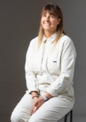
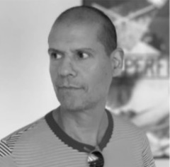
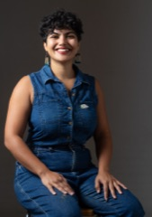
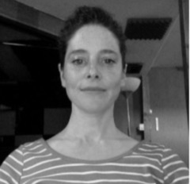

Week by Week
Unit 5: GCD Practices 03 — Overview
Unit 5 runs concurrently with Unit 6 for 15 weeks and culminates in a 2,500-word designed critical report. The unit has three core purposes:
- Writing forms — expand and consolidate descriptive, reflective, and critical writing (building on Units 2 & 3)
- Theoretical framework — develop contextual and theoretical frameworks for the body of work students produce in Unit 6 Platforms
- Practice position — investigate practice in relation to ethical, cultural, critical, and intellectual perspectives on historical and contemporary GCD
The connectivity
Unit 5 and Unit 6 run side-by-side. This allows students to consider their practice in relation to cultural, social, and theoretical contexts of contemporary Graphic Communication Design and discover emerging themes that begin to inform their creative practice.
Workshop philosophy
Your Platform brief isn't just a project to complete — it's a doorway into conversations, ideas, and ways of thinking that can help you understand your own design practice. Platform Leaders have carefully chosen concepts, readings, and approaches that represent important conversations in Graphic Communication Design. By exploring these, you aren't just preparing for Unit 6 — you're discovering new ways to research, think about, and talk about your work.
Workshop sequence structure
Platform progression:
- Weeks 1–5 (Platform 1): research training. You use Platform 1 concepts to practice research skills — finding references, annotating, questioning, gathering.
- Week 6 (the bridge): you switch to Platform 2 (different brief, same group). You stop exploring concepts and start analysing your own work.
- Weeks 7–15 (Platform 2): you analyse what your Platform 2 work reveals and develop your critical report.
Five pedagogical phases:
- Gathering (Weeks 1–3): finding, questioning, and mapping sources
- Experimenting (Weeks 4–5): material thinking and making as research
- Connecting (Week 6): the bridge — positioning your own practice
- Documenting (Weeks 7–8): frameworks and peer feedback
- Finalising (Weeks 9–13): refinement, accessibility, and publication
See the full 13-week programme →
Note: Assessment is holistic and summative, taking place at the end of the unit. You'll receive formative feedback throughout from tutors and peers.
Learning Outcomes
- 🎯 LO1 Review, investigate and reflect on the development of your current practice with reference to the body of work you are producing in your Unit 6 Platforms (AC Enquiry)
- 🎯 LO2 Explore and evaluate a range of historical and contemporary contexts of Graphic Communication Design and investigate how your current practice engages with climate, racial and social justice (AC Knowledge)
- 🎯 LO3 Produce a designed critical report that uses descriptive, reflective, and critical writing to contextualise your current practice with reference to debates in the larger context of Graphic Communication Design (AC Realisation)
Full Programme — 13 Weeks
The complete arc of Unit 5, grouped by stage of the journey. Weeks 1–2 are detailed in full below; later weeks will be added in full nearer the time.
Session Logistics
Room setup
- Two large tables, each seating 15+
- Flexible arrangement — the room can be rearranged based on that week's workshop activities and needs
What to bring
- Bring a laptop — required every session
- Most workshops are analogue: bring paper, Post-its, and pens for marking up references
- Reflective writing tasks are digital — you'll write in MS Word/Teams and submit online
Session timing
- All sessions start at 10:00 — no exceptions
- Arrive 15 minutes early (9:45) if you can
- The door closes at 10:00 — that's the start of the session
- Record your attendance on Seats
Tutor Groupings

KI
SA
AN
JEAdditional Support
- Academic Support — dates announced on Teams
- Unit 5 Support Tutorials — Monday PM
- Jaap de Maat — Stage 2 Tutorials — Monday PM
Book a Unit 5 support tutorial or Stage 2 tutorial →
Context
Unit 5 runs for 15 weeks. Each workshop is designed for two groups (15+ each) working in one room with two tutors. Most workshops use a shared intro and pre-task discussion, then parallel group work — but the exact structure varies by pedagogical need, so check that week's facilitator's note for the setup.
Co-teaching model (flexible)
Shared moments (both tutors, all 30+ students):
- Start of session: intro + frame
- Pre-task discussion
- Cross-group viewing or a comparable review moment
- End of session: exit recap or synthesis + submit
Parallel moments (each tutor with their 15+ group):
- Framework or reference introduction (conversational, not a lecture)
- Main group work (students engage independently; tutor circulates, listens, asks genuine questions)
- Sharing or viewing moments where groups show their work
Note: not all workshops will use all of these. The week-specific facilitator's note will confirm which moments apply that week.
Pre-session alignment (meet 15 min before) — always agree on:
- How you'll frame the week's purpose and connect it to Unit 6 / developing practice
- What you'll listen for during group work
- Exit recap or synthesis themes — how you'll weave activities back to the LOs
- Logistics specific to that week's structure
- Timing adjustments or pedagogical priorities for this workshop
Weeks 1–5
Gathering & Experimenting with Critical Practices
Students investigate external Platform 1 concepts and references, developing critical literacy through investigation and experimentation. Learn how to research, question, map, and think spatially.
W1: Expanding Research
Your role: After the shared intro, introduce the Platform reference to your group and guide an initial discussion. Then circulate as students explore the reference through close reading and mapping.
Key distinction: Weeks 1–5, your U5 group explores one Platform 1 brief using research frameworks. In Week 6, students switch to Platform 2 — this is where exploration becomes analysis. Unit 5 is training for that pivot.
Before Wednesday: students will have read Dirk Vis's Be a Stranger (p.85) and No Topic is Too Specific (p.29). Use these during the shared pre-task discussion (10.10–10.30).
Dirk Vis PDF — Research for People Who (Think They) Would Rather Create
Gathering & Experimenting — Frameworks for Research
Thursday · 10:00–13:00
Your Platform brief isn't just a project to complete — it's in conversation with theorists, practitioners, and ideas that can help you understand your developing design practice. This workshop is where you start building the research skills and critical vocabulary you'll need to write about your practice with precision.
Learning Outcomes for this workshop
- 🎯 LO1Review, investigate and reflect on the development of your current practice with reference to the body of work you are producing in your Unit 6 Platforms (AC Enquiry)
- 🎯 LO2Explore and evaluate a range of historical and contemporary contexts of Graphic Communication Design and investigate how your current practice engages with climate, racial and social justice (AC Knowledge)
Dirk Vis, Research for People Who (Think They) Would Rather Create
- Be a Stranger (p.85): approaching an unfamiliar subject as an outsider can sharpen your thinking, not limit it.
- No Topic is Too Specific (p.29): narrowing your focus to something precise gets you to richer conclusions than tackling a broad topic head-on.
Introduction
Before this workshop, you watched the Powers of Ten video in the Stage 2 lecture. This video shows how perspective shifts when you zoom in and out — from the vast cosmos to a single atom. Research works the same way. You start broad, then zoom in on something specific, then step back to see how it connects to larger ideas.
Video not loading? Watch on YouTube →
Platform Leaders have already chosen concepts, readings, and approaches that represent conversations in Graphic Communication Design. Exploring these now isn't just preparation for Unit 6. It builds the research skills and vocabulary that will let you write a strong, well-informed critical report about your own practice later in the unit.
Today you'll work in two groups with your tutor. You'll read and discuss a reference from your Unit 6 Platform 1 brief collectively. Then you'll map outwards from it — building a constellation that shows what concepts connect to it, what ideas branch from there. The aim is simple: recognise your Platform's references as legitimate, concrete research material, and start building critical literacy.
Schedule
Arrive & settle
Shared intro + frame (both tutors, all students)
Your tutors introduce the week's purpose: building research skills for your critical report.
Shared pre-task discussion (both tutors, all students)
Quick group discussion of the Dirk Vis reading — what struck you, what's unclear. Allows time for all students to enter.
— Split into groups: each tutor with their 15+ —
Start engaging with the reference (each group)
Your tutor introduces the reference from your Platform 1 brief and guides an initial discussion. This is a conversation to help you start thinking about it.
Close reading (each group)
Re-read the reference passage. Annotate key phrases. Identify one claim that surprises you. Note one connection to your own thinking. Your tutor circulates and listens.
Build the constellation (each group, flexible 30–45 min)
Map outwards from the reference: what concepts connect to it? What ideas branch from there? Use paper, Post-its, pen — whatever feels natural. Let the act of placing things near each other reveal what belongs together. Take a brief break if the group needs one. Your tutor will help manage the timing.
Cross-group viewing + writing + exit recap
Cross-group viewing (10 min): brief walk-around. Your group shows your map. What patterns do you notice across the two groups' maps? Where did groups connect ideas differently?
✍️ Written reflection (15 min): write a 250-word reflection. Your reflection is written during the session when ideas are fresh. It's scaffolding for your final critical report. The thinking you do here forms the foundation for what you'll write later in the unit.
If you're stuck, try: the concept you chose from the map and why it pulled you in / something that came up in conversation with someone else / how today's reference connects to something you already knew.
- What concept from today's mapping connects most directly to how you think about design? Why does it matter? LO1 + LO2
- How does one of today's ideas challenge or confirm something you already believed about design? LO1
- What surprised you about how your group approached the mapping differently than you expected?
Exit recap (15 min): share one sentence from your writing. Your tutors weave together what you've done, why, and how it connects to your developing practice and Unit 6 work (LO1 + LO2).
Submit + overflow
Photograph your constellation. Finish writing, submit digitally. Overflow time for students who need it.
Materials: paper, pens, Post-it notes, markers, table space.
Week 2 · Questioning Your Sources — following Irene Albino's Critical Margins lecture: interrogating what texts claim, how they argue, and what they mean for your practice.
Understanding the connection: Unit 5 ↔ Unit 6
Why Unit 5 research now, when Platform work happens in Unit 6?
Exploring Platform 1 references in Weeks 1–5 builds the research literacy you need. In Week 6, you'll switch to Platform 2 and start analysing your own developing practice within that brief. Unit 5 is rehearsal. By Week 6, you're ready to analyse your own work with the same critical attention.
FAQ
What if my Platform starting point doesn't seem relevant to my practice?
That's actually useful information. Exploring why something doesn't connect to your work helps you define what your practice is. Write about the gap. That's valid critical reflection.
Can I research multiple concepts from my brief?
Better to go deep on one concept than shallow on many. Master researching one idea thoroughly. You can apply those skills to other concepts later.
What if I'm interested in concepts from other Platforms?
You can look at other Platform 1 briefs for inspiration during Weeks 1–5, but your primary research lens should be your own Platform 1. This keeps your research focused. In Week 6, you'll switch to Platform 2 anyway — likely a different Platform from your Platform 1 — so you'll get exposure to multiple Platform perspectives across the unit.
Research isn't about finding the right answer. It's about developing your own perspective through curiosity, exploration, and making connections others haven't seen yet.
W2: Questioning Your Sources
Your role: After the shared intro, introduce the QAR framework to your group and guide the first full read. Then circulate as students cycle through the four questions, annotating and discussing.
What students bring in:
- They've watched Good Copy Bad Copy (pre-lecture task). [Link: Good Copy Bad Copy — YouTube]
- They attended Irene Albino's Critical Margins lecture (Tuesday) seeing annotation as artistic and critical practice. [Link: Stage 2 Lecture 2025-26 Padlet]
- They've read Dirk Vis's "Questions to Help You Get Started".
What you provide: printed copies (or digital access) to Daniel van der Velden's Research and Destroy. This is the shared text all students in your group will interrogate.
Your role is support and facilitation. All students work with the same provided text. They find their own marking language (pen, pencil, margin notes, symbols — whatever works for their thinking). Your job is to circulate, listen, ask genuine questions ("What made you mark that?"), and keep the energy moving through the four question cycles.
What good responses look like — realistic student responses to the four QAR questions, using van der Velden's "Research and Destroy" as an example. Use these to calibrate what you're listening for:
Q1 — What does the text claim?
- "Research" can be a disguise — like the whaling ship painted with the word to escape law. Van der Velden is warning against designers calling everything "research" when it's just business as usual.
- Design is changing. Designers are becoming writers, strategists, authors — not just problem-solvers.
- Graphic design has a negative definition: it exists by what it excludes (it's not art, it's not thinking). This is holding the discipline back.
Q2 — How does the argument work?
- He opens with a shocking story (the whaling ship) to establish the central problem: misuse of the word "research."
- He builds through historical examples of designers (Crouwel, Vignelli) who worked as equals with clients or became their own clients.
- He uses an economic argument (design as cheap labour, "cheaper in Beijing than in Holland") to show why design must reinvent itself as a knowledge producer, not a service.
Q3 — What does this mean for your practice?
- Stop justifying design by "solving problems." Problems might not exist or might be manufactured by the client.
- Don't wait for a brief. Research something you actually care about. Become your own client.
- Find your authorship. Do work that no one asked for — that's where the real value lies.
Q4 — What questions remain unanswered?
- If design stops serving clients, who pays? How is this sustainable beyond grants and subsidies?
- How do you become your own client without privilege or economic safety?
- Is this approach only for avant-garde designers, or is it possible within commercial practice?
Gathering & Experimenting — Critical Engagement with References
Thursday · 10:00–13:00
This week you'll interrogate Daniel van der Velden's Research and Destroy with hard questions. What's being claimed? Who benefits? What can you use? What do you resist?
Good Copy Bad Copy showed you annotation happening in the world — as reframing, protest, reclamation. Yesterday Irene showed you how artists make annotation a critical and artistic practice. Now you're doing it with your sources. Annotation is one of your tools for critical writing. It's how you interrogate sources rather than receive them passively — how you position your own work in relation to historical and contemporary design practices.
Learning Outcomes for this workshop
- 🎯 LO1Review and critically reflect on the development of your current practice by actively interrogating sources that inform your Unit 6 Platforms (AC Enquiry)
- 🎯 LO2Explore and evaluate a range of historical and contemporary contexts of Graphic Communication Design and investigate how your current practice engages with climate, racial and social justice (AC Knowledge)
- Watch Good Copy Bad Copy (pre-lecture task) — embedded below.
Video not loading? Watch on YouTube →
- Attend Irene Albino's Critical Margins lecture (Tuesday), on annotation as artistic and critical practice. [Slides: Stage 2 Lecture 2025–26 Padlet]
- Read Dirk Vis, Research for People Who (Think They) Would Rather Create — specifically Questions to Help You Get Started (Appendix). Read the PDF →
Schedule
Arrive & settle
Shared intro + frame (both tutors, all students)
Your tutors introduce the week: interrogating texts is how you build critical thinking.
Shared pre-task discussion (both tutors, all students)
Quick discussion of the Dirk Vis reading — what questions stood out to you?
— Split into groups: each tutor with their 15+ —
Start engaging with the text (each group)
Your tutor introduces the text and the four questions framework. This is a brief conversation to help you start thinking about the material.
- 💭 Q1 — What does the text claim? Direct statements, main arguments, explicit ideas. Circle key claims, underline main arguments, mark however feels natural.
- 💭 Q2 — How does the argument work? How the author builds their case. Evidence, connections, logic. Draw arrows between ideas, highlight evidence.
- 💭 Q3 — What does this mean for your practice? Where your thinking aligns or resists the author's ideas. Write reactions in margins, use ✓ and ✗.
- 💭 Q4 — What questions remain unanswered? Gaps, absences, what extends beyond the text. Write questions in margins.
A note: Dirk Vis asks — what are the key questions this source raises? Trust your instincts as you read.
Question 1: What does the text claim? (each group)
Solo work: re-read and annotate for direct statements, main arguments, explicit ideas (20 min). Group discussion: what did you find? (10 min)
Question 2: How does the argument work? (each group)
Solo work: trace how evidence supports claims, where logic connects, assumptions (20 min). Group discussion: what did you find? (10 min)
Break (flexible within each group)
Question 3: What does this mean for your practice? (each group)
Solo work: explore where your thinking aligns or resists the author's ideas (20 min). Group discussion: what did you find? (10 min)
Question 4: What questions remain unanswered? (each group)
Solo work: identify gaps, what extends beyond the text, what you'd investigate further (20 min). Group discussion: what did you find? (10 min)
Written reflection
✍️ Written reflection (30 min): write a 250-word reflection. Your reflection is written during the session when ideas are fresh. It's scaffolding for your final critical report. The thinking you do here forms the foundation for what you'll write later in the unit.
- Which of the four questions revealed something you hadn't noticed about the text before? What did it show you? LO1 + LO2
- Where do you stand in relation to the author's ideas? Which claims do you agree with, resist, or question? LO1
- How might you use this text's arguments or approach in thinking about your own Unit 6 practice? LO1
- What annotation approach or marking strategy from your group or the other group might you borrow for future reading?
Exit recap (10 min): share one sentence from your writing. Your tutors weave together what interrogating a text means and why this matters for your critical report (LO1 + LO2).
Submit
Finish writing, submit digitally.
Materials: printed copy of the text + pen/markers of your choice.
Week 3 · Whose Voices, Whose Stories? — following Laura Knight's workshop and introduction to Community resource list.
Weeks 3, 4, and 5 continue Phase 1, deepening critical literacy through additional investigation frameworks: archival curation, visual sequencing, and further research practice. These workshops remain part of the Gathering & Experimenting phase, building the foundation for the Bridge in Week 6.
Weeks 6–8
The Bridge — Reflecting and Repositioning
Students reflect on what they've learned through Phase 1 and begin positioning their own current practice within those frameworks. Peer feedback and midpoint review create a deliberate shift from external investigation to internal analysis: what will you carry forward? All three learning outcomes converge here as students move from investigating external references toward analysing their own work.
Weeks 6 and 7 complete the start of Phase 2, establishing the pedagogical bridge where students transition from investigating external Platform 1 references to analysing their own Platform 2 practice. These weeks frame the positioning work essential before the midpoint review in Week 8.
W8: Midpoint Peer Review
Your role: this workshop is about assessment transparency. Students receive formative feedback on their 600-word midpoint hand-in from their peers, using Learning Outcomes and Assessment Criteria. Your role is to facilitate peer engagement with these LOs, help groups have productive discussions, and ensure feedback is constructive and feed-forward focused. You're not assessing — you're helping students understand how to assess each other's work.
What this workshop is: two-part session. Part 1 (2 hours): students work in groups of 3–4, reviewing each other's 600-word midpoint hand-ins using a printed feedback form and the LOs. Part 2 (1 hour): students type up their feedback digitally and generate 3–4 action points to share with you before leaving.
Key pedagogical principle: understanding the LOs through peer review improves learning. When students use assessment criteria to evaluate each other's work, they internalise what good work looks like and how evidence is recognised.
Before the workshop:
- Familiarise yourself with all three LOs and their Assessment Criteria (provided in the feedback form)
- Read the "Guidelines on Writing Peer Feedback" document carefully — you'll be encouraging students to follow these principles
- Prepare to form groups of 3–4 (avoid groups of 5) on the day based on a good mix of confidence levels
- Have printed copies of: (a) Midpoint Feedback Form, (b) Peer Review Instructions/Guidelines
During peer review (10.15–12.00):
- Circulate between groups. Listen to how students are discussing the work.
- Encourage explicit links to LOs. If students make vague comments, ask: "Which LO does that connect to? What evidence are you seeing?"
- Help groups stay on track with timing (each student should be reviewed in roughly 40 min)
- Model the principles of good feedback yourself: positive tone, work-focused, feed-forward language
- Note where students are struggling with the LOs — this informs your ongoing tutor-student dialogue
During self-reflection (12.00–13.00):
- Circulate while students type up their feedback and action points
- Encourage them to be specific and actionable in their 3–4 points
- Collect digital copies of their notes before they leave (email or Teams)
After the workshop:
- Add students' action points to OAT (assessmentfeedback.arts.ac.uk) — no grades needed, just copy and paste their notes
- Add a line of your own framing their peers' feedback, e.g., "As highlighted by your peers, you could..."
- Save as completed and note the date
Key documents (printed for students):
- Midpoint Feedback Form — the three LOs with Assessment Criteria, sliders for indicating degree of evidence, and space for notes on each LO
- Guidelines on Writing Peer Feedback — principles for tone (positive, work-focused, feed-forward), questions to guide discussion by LO, and Kolb's Reflective Cycle as a reference for LO3
Why this matters: this session demonstrates assessment to students in action. When they use the LOs to give feedback, they learn what evidence looks like, how tutors think about assessment, that assessment criteria are a shared language rather than something mysterious, and that their peers' observations matter. This improves their own work and their engagement with Unit 5 throughout the remaining weeks.
Key principle: this is peer feedback, not tutor assessment. Frame it to students that way. Their peers' observations are valuable because they come from the same learning context.
Introduction
Your midpoint hand-in is a checkpoint. It's not a final assessment — it's a moment to pause, reflect on what you've learned so far in Unit 5 and Unit 6, and get feedback on your thinking.
This week, your peers will read your work and give you feedback. But they won't be giving opinions. They'll be giving feedback based on the same Learning Outcomes your tutors use — the criteria that structure what Unit 5 is asking you to do.
This is powerful because it makes assessment transparent. You get to see: what does evidence of this Learning Outcome actually look like? You get to see it in your peers' work, and your peers will see it in yours.
Your role today is twofold. First, you'll be a reviewer, reading two of your peers' hand-ins and giving them feedback linked to the LOs. Second, you'll be reviewed by two of your peers. Both are learning experiences. Giving good feedback teaches you how to assess work. Receiving peer feedback gives you concrete next steps for your own thinking.
Your peers' feedback is your starting point for moving forward. Use their action points and your own reflections to develop your work over the following weeks.
Learning Outcomes for this workshop
- 🎯 LO1Review, investigate and reflect on the development of your practice with reference to the body of work you are producing in your Unit 6 Platforms (AC Enquiry)
- 🎯 LO2Explore and evaluate a range of historical and contemporary contexts of Graphic Communication Design and investigate how your current practice engages with climate, racial and social justice (AC Knowledge)
- 🎯 LO3Produce a designed critical report that uses descriptive, reflective, and critical writing to contextualise your practice with reference to debates in the larger context of Graphic Communication Design (AC Realisation)
Your midpoint hand-in & peer review. You will have submitted your 600-word midpoint reflection by 1:00pm on Monday. This week, your peers will read your work and give you feedback using Learning Outcomes and Assessment Criteria to assess Unit 5.
- Review your own 600-word hand-in. What did you focus on? What were you trying to show?
- Read the "Guidelines on Writing Peer Feedback" document (your tutor will provide this). Notice the principles: positive tone, work-focused, feed-forward language.
- Familiarise yourself with the three Learning Outcomes above — you'll be using these to give feedback to others.
Why this matters: understanding the LOs through peer review is powerful. When you assess your peers' work against these criteria, you internalise what good evidence looks like and how to develop your own work.
Schedule
Arrive & settle
Shared intro + frame (both tutors, all students)
Your tutors introduce: this is peer review, not tutor assessment. You're learning from each other. The LOs are your shared language — they're how we all know what we're looking for.
Shared pre-task discussion (both tutors, all students)
Quick reflection. What does it mean to give feedback "linked to an LO"? What's the difference between opinion and evidence-based feedback? Why does it matter?
— Form groups: 3–4 people per group, mixed confidence levels (avoid groups of 5) —
Peer review cycle (each group)
How it works: in each group of 3, two students review the work of the third student together. Here's the timing for each rotation:
- Read (10 min): the two reviewers read the student's 600-word hand-in carefully.
- Discuss (20 min): using the Midpoint Feedback Form and the three LOs, discuss what you notice. Where do you see evidence of LO1? LO2? LO3? Make notes on the form. Mark the slider to show the degree of evidence.
- Give feedback (5 min): hand the notes to the student being reviewed. Offer a brief verbal summary of your main points.
Then rotate. The next student becomes the one being reviewed, and the cycle repeats.
Timing per group: each student should be reviewed in roughly 40 minutes. Use the feedback form to structure your discussion and keep on track.
Break
Self-reflection + action points (each student, in-class)
✍️ Now that you've received peer feedback, type up a brief reflection and generate 3–4 action points to move your work forward. This isn't long — 150–200 words for your reflection, plus your action points listed clearly.
- What did your peers highlight as strengths in your work? LO1 + LO2 + LO3
- What patterns did you notice across the feedback you received? Any themes? LO1
- What are 3–4 specific action points you'll work on as you continue your Unit 5 work? These should be feed-forward focused — concrete steps to develop your thinking. LO1 + LO3
Example action points: develop my analysis of a specific reference using the LOs as a lens / find 2–3 more historical examples to contextualise my Unit 6 practice / strengthen the link between my Platform work and the references I've chosen / revisit Kolb's Reflective Cycle and map my own writing against it.
Before you leave: share your typed reflection and action points with your tutor (email or Teams).
Finish
Materials: printed Midpoint Feedback Form (one per review), Peer Review Instructions/Guidelines, and your 600-word hand-in.
Weeks 9–13
Activating & Finalising Knowledge
Students activate the research practices they've developed, now directed at analysing their own Platform 2 work. Produce a designed critical report that publishes their practice as knowledge. Culminates in public presentation (Open Studio).
W9: CRL — Mapping Connections in Space (Part 1)
Your role: in this workshop, students become cartographers of their own thinking. They're mapping the references they've gathered throughout Unit 5, tracing connections, finding clusters, and making visible the structures that underpin their developing practice. You facilitate the mapping process — helping students see patterns, ask questions about why certain references cluster, and move from abstract digital connections to concrete spatial thinking.
What this workshop is: students work with their references (texts, images, projects, ideas they've collected) and map them on large paper, using whatever visual language helps them think — lines, clusters, spatial proximity, annotations. The act of plotting reveals thinking. In Week 10, they'll translate this abstract map into physical, three-dimensional space.
What access means here: mapping can be visual, textual, tactile, diagrammatic. No single "right" way. Students decide how to represent their thinking.
Before the workshop: familiarise yourself with the references each student has gathered (they should have brought their Platform 1 materials). Understand the mapping examples shown in the pre-task (Stamen Design, Linked Jazz, Dear Data). You don't need to reproduce these — they're models for how mapping can work, not prescriptions.
During the workshop (10.15–12.00):
- Circulate as students map. Listen to why they're positioning things. Ask: "Why did that reference go there?" "What surprised you when you stepped back and looked at the whole map?"
- Help students notice patterns. Don't point them out — ask questions that make students see them.
- Note tensions: references that don't fit neatly, overlaps, gaps. These are valuable.
- Encourage annotation. Why do connections matter? What does proximity reveal?
During cross-group viewing (12.00–12.20): facilitate students walking around to see others' maps. What's similar? What's radically different? Why might that be?
Key principle: the map isn't the answer. The thinking that happens through mapping is. The messiness is the point.
Introduction
Throughout Unit 5, you've been gathering references — texts, projects, ideas, inspirations. They live in your notebook, your browser, your head. They're real, but they're scattered. This week, you're going to make those references visible. You're going to map them.
Mapping is a research tool. When you plot your references in space — on paper, on a wall — patterns emerge. You see which ideas cluster together. You notice what sits at the edges. You discover connections you didn't know were there. The act of placing something, stepping back, and looking at the whole picture reveals the structure of your own thinking.
This isn't about making a beautiful diagram. It's about thinking spatially. It's about asking: why does this reference matter to me? Where does it sit in relation to others? What does the shape of my thinking actually look like?
Next week, you'll move this abstract map into physical space — into materials, dimensions, pathways, something you can walk through and touch. But this week is about seeing your references clearly, on paper, for the first time.
Learning Outcomes for this workshop
- 🎯 LO1Review, investigate and reflect on the development of your practice with reference to the body of work you are producing in your Unit 6 Platforms (AC Enquiry)
- 🎯 LO2Explore and evaluate a range of historical and contemporary contexts of Graphic Communication Design and investigate how your current practice engages with climate, racial and social justice (AC Knowledge)
Mapping as Research Practice — explore three different approaches to mapping data and relationships visually:
- Stamen Design's Layered/Linear Mapping — how information designers layer and organise complex information spatially.
- Linked Jazz's Gravitational Network — how network connections create gravitational pull; central and peripheral positions.
- Dear Data's Personal Mapping — how personal, hand-drawn data mapping can be as powerful as digital systems.
Notice: each uses a different visual language to show relationships. None is "correct." The strategy you choose should help you think through your relationships, not illustrate them.
Schedule
Arrive & settle
Shared intro + frame (both tutors, all students)
Your tutors introduce mapping as a research practice. This is about making visible — no right answers, no beautiful diagrams required, just honest thinking made spatial.
Shared pre-task discussion (both tutors, all students)
Quick reflection on the three mapping examples. Which visual language felt most useful? Why? What surprised you about how different people represent relationships?
— Split into groups: each tutor with their 15+ —
Map your references on large paper (each group)
Using large paper (A2 or larger), plot your references. Use whatever visual language helps you think:
- Proximity (things close together cluster together)
- Lines connecting related ideas
- Colour coding
- Annotations explaining why
- Spatial arrangement (central, peripheral, radiating, linear)
- Symbols, marks, whatever feels natural
Your references can be books, articles, projects, images, artists, concepts, films — anything that's shaped how you're thinking about your Platform work. Don't plan it. Let the act of placing reveal patterns.
Break
Continue mapping + annotation (each group)
Keep working. Add layers. Annotate. Write notes explaining why certain references cluster. What surprised you? What questions does the map raise?
- Your references plotted spatially
- Visible connections (however you've chosen to show them)
- Annotations explaining key relationships
Cross-group viewing (both tutors, all students)
Brief walk-around. Each group's map is visible on the wall. Circulate and look at what others did. What's similar? What's radically different? Why might different people organise their thinking so differently?
Written reflection (each student, in-class)
✍️ Write a 250-word reflection. Your reflection is written during the session when ideas are fresh. It's scaffolding for your final critical report. The thinking you do here forms the foundation for what you'll write later in the unit.
- What surprised you about how you chose to arrange your references? LO1
- What does the spatial arrangement of your map reveal about the shape of your thinking? Which references are central? Which are peripheral? Why? LO1 + LO2
- What unexpected connections appeared when you stepped back and looked at the whole map? LO1
- What questions does your map raise for you about your Platform 2 work? LO1
If you're stuck, try: the reference that surprised you most by where it ended up / the connection you didn't expect to make / what the overall shape of your map says about your interests.
Exit recap + submit
Share one sentence from your reflection. Your tutor weaves together what mapping revealed, how it connects to your developing practice, and why spatial thinking matters for your Unit 5 work (LO1 + LO2).
Submit your reflection digitally. Photograph your map from at least two angles — you'll need these for Week 10.
Materials: large paper, markers, coloured pencils, tape, string (optional — for 3D elements if it helps you think).
Your map (rolled or folded), your notes on the map, and any materials you think might help translate it into 3D.
W10: CRL — Mapping Connections in Space (Part 2)
Your role: this week, students move their abstract map into physical space. They're making something you can walk through, touch, experience with your whole body. Your job is to help them translate spatial thinking into material thinking — how does proximity become actual distance? How does a line become a pathway? How do colours and symbols become materials? You're facilitating the leap from representation to experience.
What this workshop is: using last week's maps as a blueprint, students choose materials, decide on scale and format, and build a physical installation or spatial experience that embodies their map. This isn't about scale models. It's about creating a spatial experience of their references — something others can literally walk through.
What access means here: physical installations should be navigable by different bodies. If there are stairs, note it. If there are narrow passages, acknowledge it. Make choices consciously.
Before the workshop: gather varied materials — string, rope, paper, card, fabric, paint, tape, wood, objects. Think about what students might need to make their thinking tactile. Have a variety so students can choose based on their map logic.
During the workshop (10.15–12.00):
- Circulate as students build. Ask: "What does this material represent?" "Why does someone walking through this experience [your idea] the way you want them to?"
- Push decisions. Don't let them default. "Why that colour?" "Why that spacing?"
- Help students problem-solve: "Your map shows connection — how do you make that walkable?"
- Note tensions and surprises. Materials constrain and reveal in ways paper didn't.
During cross-group viewing (12.00–12.20): facilitate experiencing each other's installations. Not just looking — walking through, touching, noticing. How does being inside someone else's map change understanding?
Key principle: the installation isn't decoration. It's thinking made tangible. The constraints of materials and space force new insights.
Introduction
Last week, you mapped your references on paper. You made visible the structure of your thinking. This week, you're going to step into that map. You're going to build it.
Your map becomes a spatial experience — not a model or a miniature, but an actual space someone can walk through. If your map showed clustering, maybe there are zones people move between. If your map showed radiating connections, maybe there are pathways leading outward. If your map showed a central idea with satellites, maybe people start in the centre and spiral out.
The materials you choose matter. String isn't just a line — it has tension, flexibility, visibility. Card can be rigid or fold. Fabric drapes and moves. Objects carry associations. When you translate your map into space and materials, you're forced to make new decisions. You discover what your thinking actually needs to be expressed.
This isn't about creating a beautiful or finished installation. It's about translating abstract spatial thinking into lived experience. It's about asking: if someone walks through my references, if they move through my map with their body, what do they understand about how I think?
Learning Outcomes for this workshop
- 🎯 LO1Review, investigate and reflect on the development of your practice with reference to the body of work you are producing in your Unit 6 Platforms (AC Enquiry)
- 🎯 LO2Explore and evaluate a range of historical and contemporary contexts of Graphic Communication Design and investigate how your current practice engages with climate, racial and social justice (AC Knowledge)
From Map to Space: Translating Representation into Experience. Before the workshop, think about these questions:
- What happens when you move from looking at a map to walking through it?
- How do artists and designers translate abstract relationships into physical, three-dimensional space? (Think of installations, exhibitions, pavilions where you move through space.)
- What materials carry meaning? How does string feel different from rope? How does a narrow passage feel different from an open space?
Optional viewing: research one artist or designer who works with spatial installation or site-specific work — e.g. James Turrell, Olafur Eliasson, Cecilia Vicuña, or a contemporary artist of your choice. How do they translate ideas into space?
Schedule
Arrive & settle
Shared intro + frame (both tutors, all students)
Your tutors introduce spatial translation. You're moving from representation (the map) to experience (walking through it). Materials shape thinking as much as thinking shapes materials.
Shared pre-task discussion (both tutors, all students)
Quick reflection. What did you notice about how materials work in space? What surprised you when you thought about translating your map physically?
— Split into groups: each tutor with their 15+, in different studio/space areas —
Plan and begin building (each group)
Using your map as a blueprint, decide:
- Format: will this be a floor-based installation? Hanging? Vertical? A pathway people walk through?
- Scale: how big? Big enough to walk through? To stand inside?
- Materials: what carries your map's logic? String for connections? Fabric for clustering? Objects for references?
- Navigation: how do people move through this? Is there a start and end? Loops? Choices?
Start building. Don't overthink. Let materials and space reveal what works.
Break
Continue building + refining (each group)
Keep working. Test it. Walk through your own installation. Does it work? Does someone else's body understand what you're trying to show? Adjust. Add. Remove.
By 12.00, your installation should be walkable and experiential — not necessarily finished, but functional enough for someone to move through it.
Cross-group experiencing (both tutors, all students)
Not just viewing — experiencing. Each group walks through the other group's installation. Move through it slowly. Notice what the materials make you feel. Notice how your body navigates the space. What does being inside someone else's map reveal?
Written reflection (each student, in-class)
✍️ Write a 250-word reflection. Your reflection is written during the session when ideas are fresh. It's scaffolding for your final critical report. The thinking you do here forms the foundation for what you'll write later in the unit.
- What did translating your map into physical space reveal that the paper map alone couldn't show? LO1
- How did choosing materials change your thinking? What surprised you about what worked vs. what didn't? LO1
- What does it mean to move through your references rather than just looking at them? How does this change understanding? LO2
- How might this spatial experience of your references inform how you think about presenting your critical report later? LO1
If you're stuck, try: the moment when the installation surprised you / the material that worked better than you expected / what walking through someone else's map taught you about spatial thinking.
Exit recap + submit
Share one sentence from your reflection. Your tutor weaves together what translating thinking into space revealed, how material choices shape understanding, and why this spatial practice connects to your developing thinking (LO1 + LO2).
Submit your reflection digitally. Photograph your installation from multiple angles — ground level, overhead if possible, from inside. Document the experience.
Materials available: string (various gauges), rope, fabric scraps, paper and card, paint and brushes, tape (masking, clear, duct), wood offcuts or dowels, clips, hooks, fasteners, and found objects you bring.
Notes on cross-group learning
Week 9 cross-group viewing: you'll see radically different approaches to mapping the same type of content. This normalises multiple ways of representing thinking — brief, quiet, observation-based.
Week 10 cross-group experiencing: this is active. You'll walk through each other's installations at different speeds, noticing different things. Experiencing someone else's spatial logic makes visible what you can't see in a map.
References & further reading
- Stamen Design — layered/linear information mapping
- Linked Jazz — network mapping as gravitational systems
- Dear Data — hand-drawn personal data mapping
On spatial thinking and installation:
- James Turrell — light and perception in space
- Olafur Eliasson — experience-based installations
- Cecilia Vicuña — material and spiritual geographies
- Sara Ahmed, Queer Phenomenology — how movement through space shapes understanding
W11: Publishing Your Practice
Your role: in this workshop, students work in small groups (4–5 people each) as a publisher collective. Their job is to make deliberate publishing decisions about how their critical reports — now framed as publications for public circulation — will be presented and accessed. Your job is to facilitate their thinking — asking questions, listening for real decision-making, and helping them see how these decisions interconnect. You're not advising; you're facilitating collective deliberation.
What this workshop is: the 15+ students in your group split into 3–4 smaller publisher collectives (roughly 4–5 people each). Each collective chooses a publisher name and deep-dives into 2–3 of the 8 Access Questions. They then present their findings back to the whole group, so students learn from each other's decisions and tensions. Finally, each collective synthesises their work into a 250-word publication statement.
The framework: Kaiya Waerea's Access Questions for Self-Publishing structures the thinking around 8 key areas: roles, communication, cost, time, writing, editing, design, and distribution. These aren't abstract questions — they're about how your collective would actually publish your work as a public-facing publication.
What access means here: access isn't a compliance checklist. It's a methodology for thinking about power, labour, and care in publishing. Every publishing decision — who decides, how much it costs, who has time, what language, who edits, how it looks, where it's distributed — shapes whose voices are amplified and whose are silenced.
Before the workshop: read through all 8 Access Questions in the PDF. Know them well enough to introduce each one briefly (2 min max) and ask clarifying questions when students are discussing. You don't need to be an expert in access or publishing — but you do need to understand the framework well enough to facilitate thinking, not give advice.
During the workshop (10.20–11.45):
- Circulate and listen. Don't answer questions; ask them back.
- Listen for real decision-making, not abstract answers.
- Push back gently on performativity — if a group says "we're being accessible," ask "To whom? How do you know?"
- Help groups capture tensions and contradictions in their notes.
- Help groups prepare what they'll present.
During presentations (11.45–12.10):
- Facilitate cross-group questions that help students see connections across their findings.
- Help students see that publishing decisions are interconnected — changing one affects others.
During synthesis (12.10–12.30):
- Students write their publication statement drawing on both their own work and others' presentations.
- Exit recap: weave together how these decisions will shape their final report's reach and impact.
Key principle: not every access need can be met. That's not failure; it's information. What matters is honest acknowledgment and explanation. The best publication statements acknowledge contradictions.
Introduction
Your critical report is near finished. But finishing isn't publishing. Publishing is the moment when your private thinking becomes public — and every decision you make affects who can access and engage with your work.
Who gets a say in how your work is presented? How much does it cost to access? What time do people have to read it? What language is it written in? Who edited it? How does it look? Where will people find it? These aren't technical questions. They're decisions about power — decisions about whose voices get amplified and whose get silenced.
Kaiya Waerea's Access Questions for Self-Publishing framework invites you to make these decisions consciously, collectively, and with care. Not because there's a "right" answer, but because thinking carefully about access is how you practice critical design.
Learning Outcomes for this workshop
- 🎯 LO1Review, investigate and reflect on the development of your practice with reference to the body of work you are producing in your Unit 6 Platforms (AC Enquiry)
- 🎯 LO3An ability to produce a designed critical report that uses descriptive, reflective, and critical writing to contextualise your practice with reference to debates in the larger context of Graphic Communication Design (AC Realisation)
Your role: thinking like a publisher
For this workshop, you're a publisher collective — a group of 4–5 people making publishing decisions together. You've spent weeks researching, thinking, writing, and designing your critical report. Now you're going to think about it differently: not as individual writers or designers, but as a collective deciding how to publish your work as a public-facing publication.
Publishing means deciding how your work becomes public. It's about making choices that affect who can access what you've made and how they encounter it. In this workshop, your role is to:
- Make deliberate decisions together. Not follow a checklist. Sit with real questions as a group: who do we want to read this? What can we afford? What's our timeline? What does our design say about our values? These aren't technical questions with right answers — they're questions that reveal what you actually believe.
- Listen and build on each other's thinking. When someone shares an idea, ask questions rather than dismiss it — "Why do you think that matters?" or "What would that actually cost us?" If you disagree, say so, and explain why. The best decisions come from disagreement.
- Capture tensions and contradictions. You can't meet every access need — choosing to print means cost, choosing digital means excluding people without internet. You might want to design beautifully, but some design choices exclude people. Write these tensions down. Don't try to solve them perfectly — it's more important that you name them and explain why you chose what you did.
- Make actual decisions as a collective. Not "this would be nice" but "we will do this." If you can't all agree, decide how you'll move forward anyway — vote, one person decides, or compromise.
- Connect to your publication. Every decision you make as a publisher shapes how your critical report will be encountered as a public-facing work.
Access Questions for Self-Publishing — Introduction (Kaiya Waerea). Read the Introduction (pages 6–14, approx. 400 words) — it covers what "access" means in publishing, why these conversations matter, how to use the framework, and key principles for group decision-making.
[PDF: Access Questions for Self-Publishing — Full resource]
Then skim all 8 Access Questions below. Your subgroup will deep-dive into 2–3 of them in the session.
The 8 Access Questions (overview)
Read through all 8 briefly — your subgroup will deep-dive into 2–3 of these.
- 💭 1. Roles & Hierarchy — Who gets to decide? Whose labour is visible, whose invisible? Are you reenacting power dynamics or resisting them?
- 💭 2. Communication — How do you know what people actually need? Have you asked, or assumed? What communication tools work for everyone?
- 💭 3. Cost & Value — What's the actual cost (money, energy, time)? Who can afford to participate? Who gets left out?
- 💭 4. Time — What's your timeline? Did everyone agree to it, or was it imposed? Do you know how long things actually take different people?
- 💭 5. Writing — What writing norms are you enforcing? Which ones serve your work, which ones just gatekeep?
- 💭 6. Editing — What kind of editorial relationship do you want? Custodial or controlling? Do writers know what to expect?
- 💭 7. Design & Production — Who are you designing for? What do fonts, colours, layout communicate ideologically? Is accessibility a last-minute add-on or central from the start?
- 💭 8. Distribution & Press — Where will people encounter your publication? How will they know about it? Are you being honest about what you can't provide?
Schedule
Arrive & settle
Shared intro + frame (both tutors, all 15+ students)
Your tutors introduce: publishing is a political act. Every decision — roles, cost, timeline, language, design, distribution — shapes whose voices are heard. You're making these decisions consciously and collectively today.
Shared pre-task discussion (both tutors, all students)
Quick reflection on the Access Questions introduction. What surprised you? What felt uncomfortable? What does "access" mean in the context of your own report?
— Split into subgroups: 4–5 people per group —
Choose your publisher collective name (each subgroup)
Spend 5 minutes as a group deciding on a publisher name — the name of your collective. Make it real: it represents your values and approach. Write it down.
Cycle through assigned questions: engage → present back (each subgroup)
Your workshop follows a repeating pattern for each of your 2–3 assigned questions:
- Engage with the question (20–25 min): your group reads the question and prompts, discusses, and makes notes on decisions.
- Present back (5 min): one person from your group shares 1–2 key findings and 1 tension you discovered. Other groups listen.
Repeat this cycle for each of your assigned questions.
- Set A — Roles, Communication, Cost (Questions 1, 2, 3): governance & relationship questions
- Set B — Time, Writing, Editing (Questions 4, 5, 6): process & labour questions
- Set C — Design & Production, Distribution (Questions 7, 8): output & reach questions
Synthesis + publication statement (each subgroup, working independently)
✍️ Write a 250-word publication statement for your collective, drawing on the decisions you made in your deep-dive questions, insights gained from other groups' presentations, and your collective's overall publishing philosophy and values. It's written during the session when ideas are fresh — scaffolding for your final critical report.
Exit recap: share one sentence from your publication statement. Your tutor weaves together how publishing decisions shape practice, why access matters, and how this connects to Unit 5 learning (LO1 + LO3).
Submit + overflow
Finish your publication statement, submit digitally. Overflow time for groups who need it.
Materials: your draft critical report (written, designed, almost ready) and the Access Questions PDF.
The 8 Access Questions
These aren't problems to solve — they're prompts for thinking together about what you actually value. There's no "right" answer to any of them. You're making decisions for your publisher collective: not in the abstract, but specifically how your collective would publish, what matters to you, and what compromises you'd make and why.
Capture tensions and contradictions as you go — if two people in your group disagree, write it down. Think practically: don't just say "we'd make it accessible," say how, what it would actually cost, and what you'd give up to make it happen.
💭 1. Roles & Hierarchy
Publishing is always collaborative, even when you're self-publishing. Roles — designer, editor, writer, decision-maker, distributor — carry power. Who gets a say? Whose work is visible, whose invisible? These boundaries can enact dominant power dynamics or resist them. The question is whether your publishing roles reflect your values, or just reenact norms.
- List the main decisions your collective needs to make to publish your publications. For each one: who gets to decide? Are they volunteering or expected to do it? Do they want to?
- Are there roles some of you are doing invisibly or without being asked (organising meetings, giving feedback, making the final call)? Is everyone aware of these roles? Is it fair?
- If someone in your collective disagrees with a decision, what happens? Have you actually talked about how conflict gets resolved, or are you assuming everyone will just go along?
💭 2. Communication
One major barrier to publishing is prejudice, misunderstanding, and miscommunication — and these can happen in the process itself, not just the final product. Making assumptions about people's pronouns, capabilities, availability, or communication preferences is exclusionary. Practising asking these questions shows care for each other and the work.
- How do you know what you actually know about each person's needs and abilities? Have you asked, or assumed?
- What communication tools would work for everyone in your collective — email, in-person, voice note, visual diagram, written notes?
- How will you check in on whether people's needs are changing? How will you adapt?
💭 3. Cost & Value
"Cost" isn't just money — energy is a cost, time is a cost, labour is a cost. For disabled people especially, energy and time can be the biggest expenses (27% of disabled adults in the UK live in poverty; it costs £583 more per month on average to be disabled). The same work costs different people different amounts — you need to be aware of who this leaves out, and try to minimise costs of all kinds, not just financial.
- If you were printing your publications (you're not, but imagine): who could afford to buy them? Who couldn't? What does that say about your values?
- What is the "value" you're trying to produce with your critical report as a publication? Knowledge? Representation? Challenge? How does that shape who it's for?
- Are there hidden costs in your publishing process — unpaid labour, energy, time off work, equipment access? Who bears those costs?
💭 4. Time
Time is a formal component of publishing — deadlines, schedules, pacing — and these can be barriers caused by scheduling. A meeting at 3pm works for a student but not a parent; a tight deadline works for some people but excludes others. Different temporal structures suit different people. The question is whether you're choosing a timeline that's right for your project, or just reenacting norms.
- What's the realistic timeline for finishing and publishing your work as a publication? Did everyone agree on this, or was it imposed?
- Do you know how long tasks will actually take different people — writing, editing, designing, deciding on distribution? Have you asked?
- If someone in your collective needs more time, what happens? Is there flexibility, or is the deadline fixed?
💭 5. Writing
There are many ways we can feel othered by writing — especially in academic or design publishing contexts where there are "correct" ways to write, referencing styles, and norms. You might be carrying baggage from previous writing experiences, or have been told your way of thinking isn't "right." The question is which writing rules are actually helping your work, and which ones are just gates keeping people out.
- What writing pressures have you or your collective members faced — formal academic style, particular referencing, "objective" tone?
- Which of these rules actually serve your critical report? Which ones could you let go of?
- What if someone writes differently — more poetically, more fragmentary, more conversational? Does your publication accommodate that, or does it force conformity?
💭 6. Editing
Editing is where power dynamics become most explicit in publishing. Traditionally, editors have final say and can reject work that doesn't comply — but editing can also be custodial, supporting work to be its best by listening and connecting with the particular needs of the writer. The question is what kind of editor you want to be, and what kind of editorial relationship you want.
- Have you discussed what editing means in your collective? Do people understand what feedback they'll get and when?
- How will you give feedback that's helpful, not controlling? How will you listen to what writers actually need?
- If someone's way of writing is "unconventional," does your editorial process accept that, or try to "fix" it?
💭 7. Design & Production
This is where most people think of "accessibility" — fonts, colours, spacing, contrast, navigation. But visual and material design carries ideology: the choices you make tell a story about whose work this is, who it's for, and what you believe about disability. When access is a last-minute add-on, it results in a diminished publication; when it's centred from the start, it becomes a site for generating new ways of thinking about communication.
- Who are you designing your publication for? What do they need to access it?
- What does your visual language — fonts, colours, layout, material form — communicate ideologically? Does it match your values?
- Are there design choices that would make your publication more accessible but also more interesting, more beautiful, or more true to what you're saying?
💭 8. Distribution & Press
Providing access in your publication is one thing; making sure the people who need it actually know about it is another. Being honest about what you can't provide access for is equally important — if your event is up stairs, say so. Different distribution methods reach different people and allow different access. The question is where you want your work to be encountered, by whom, and how they'll know about it.
- How will your publication be shared — digital only, printed, somewhere else? Where will people find it?
- Who are you hoping will encounter your publication? Where do those people actually look for work like this?
- What are you doing to make sure people know about your publication and how to access it? Are you being clear about what you can and can't provide?
After the workshop
Your publication statement (250 words) should synthesise: the 2–3 questions your subgroup deep-dived into (your decisions, tensions discovered), insights from the other subgroups' presentations, and your collective's overall publishing philosophy and values. It's not a summary of the framework — it's your statement of why you make the publishing decisions you do. It becomes part of your critical report.
"[Publisher Name] is a collective founded to publish [type of work]. We believe publishing is a political act. In this workshop, we interrogated how decisions around roles, communication, cost, timeline, writing, editing, design, and distribution shape whose voices are heard. Specifically, we deep-dived into [your assigned questions] and discovered that [key tension]. We acknowledge we cannot meet every access need; specifically, [example]. Here's why, and here's what we offer instead..."
Not every access need can be met — that's not failure, it's information. What matters is honest acknowledgment and explanation. The best publication statements acknowledge contradictions.
References & further reading
Framework: Kaiya Waerea, Access Questions for Self-Publishing (2022). Funded by University of the Arts London CCW Equality, Diversity & Inclusion fund. Written by Kaiya Waerea in consultation with Olivia Spring, Abi Palmer and D Mortimer. Copy edited by Catriona Morton. Used with written permission from the author for academic purposes.
- 10 Principles of Disability Justice — Disability Justice Collective
- Access Intimacy: the Missing Link — Mia Mingus
- Access is Love Reading List / Aftercare Menu — Healing Justice London
- Alt Text as Poetry — Bojana Coklyat and Shannon Finnegan
- Common Barriers to Participation Experienced by People with Disabilities — Centres for Disease Control and Prevention
- Disability Theory by Josh A. Halstead, in Extra Bold: a feminist inclusive anti-racist non binary field guide for graphic designers, ed. Ellen Lupton and Jennifer Tobias
- Making conditions better for neurodivergent freelancers, an open letter — Vijay Patel and Ray Young
- Neurodiversity: some basic terms & definitions — Nick Walker
- Norm, Measure of All Things — Sofia Lemos
- Why It's Taking So Long — Johanna Hedva
Week 12 continues Phase 3, providing dedicated time for students to refine their critical reports, incorporate feedback from earlier sessions, and prepare their publishing explorations for the Open Studio presentation.
W13: Open Studio
Your role: this is a public-facing exhibition of students' publishing explorations. You're facilitating a studio environment where others can see, engage with, and ask questions about the design choices students made in bringing their critical reports to publication. Your role is to help students articulate their publishing decisions and field questions from visitors.
What this workshop is: students display evidence of their publishing explorations — design prototypes, layout experiments, material samples, printed pages, website mockups, or hybrid experiments. This is not a showcase of finished reports. It's a showcase of the thinking behind publication design choices.
Setup and timing:
- 10:00–11:00: Setup — students and tutors arrange the studio space
- 11:00–12:30: Open Studio — visitors circulate, engage, ask questions
- 12:30–13:00: Take down
Your job is to:
- Help students prepare their display and talking points before 11:00
- Circulate during the Open Studio to facilitate conversations
- Listen to how students articulate their publishing decisions
- Note what visitors ask — these are often the most interesting questions about access and design
Key principle: this is about making visible the critical thinking behind design choices. It's not about polished finished products.
Introduction
You've spent weeks thinking about how to publish your critical report. You've made decisions about roles, communication, cost, timeline, writing, editing, design, and distribution. Now it's time to show that thinking.
This Open Studio is an opportunity to make visible what usually stays hidden: the experiments, the prototypes, the choices that didn't work, the material samples, the layout iterations. When you display your publishing explorations, you're inviting others to see the logic behind your design — not just the end result.
The Open Studio is a public space. Visitors will ask questions. They'll wonder why you chose that font, that paper weight, that distribution method. These conversations are valuable. They help you articulate what you believe about publishing and access.
Bring evidence of your publishing explorations:
- Design prototypes: early versions, iterations, variations
- Layout experiments: different approaches to organising information
- Material samples: printed pages, weight tests, colour experiments
- Website mockups: digital prototypes or screenshots
- Hybrid experiments: any combination of print and digital approaches
Show how your design choices reflect your critical position. Consider: print, digital, or hybrid approaches — what medium best communicates your ideas?
Schedule
Arrive & settle
Setup
Arrange the studio space. Display your work. Prepare a brief (2–3 minute) statement about your publishing decisions: what was your approach? What did you prioritise? What compromises did you make?
Open Studio
Visitors circulate. Engage with questions. Listen to what people notice, what they ask, what surprises them about your choices.
Take down
Clear the space together.
From a previous Open Studio
Post-Submission: Each One Teach One
After your critical report hand-in, Unit 5 continues with a two-part workshop run by Kira Salter: Each One Teach One (EOTO), on Wednesdays. This sits outside the core 13-week programme above — a chance to discover and share your own skills through design thinking, once the report is submitted.
Identifying & mapping your skills
Focus on discovering and mapping out your own innate skills.
Skillz Fair
Teaching and sharing skills across the studio in a fun and engaging Skillz Fair.